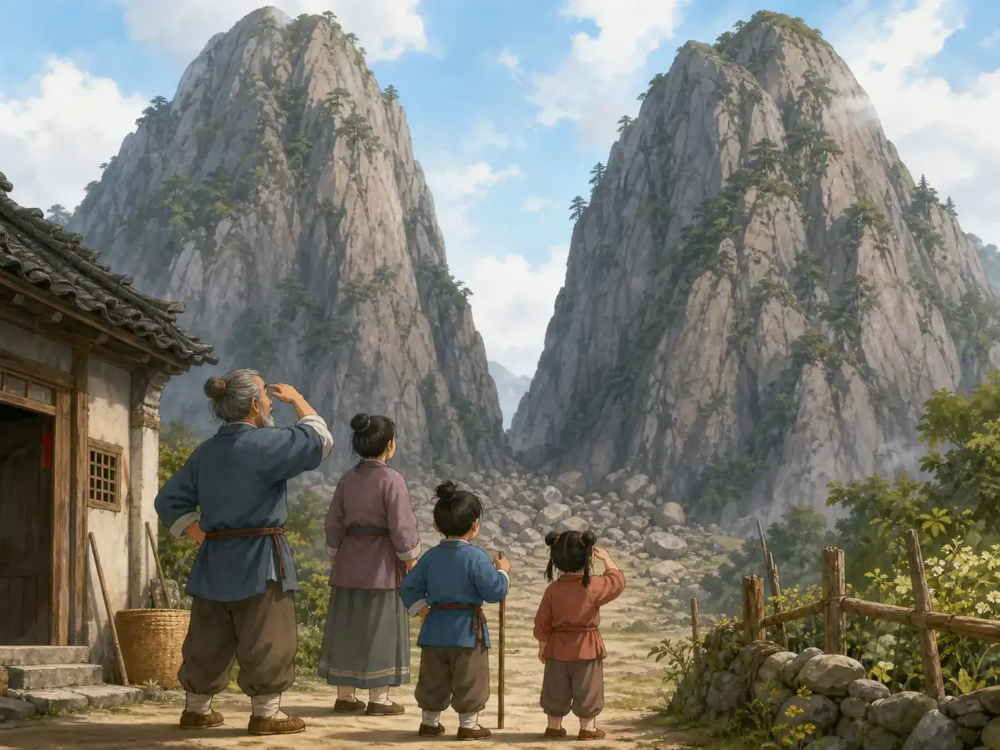
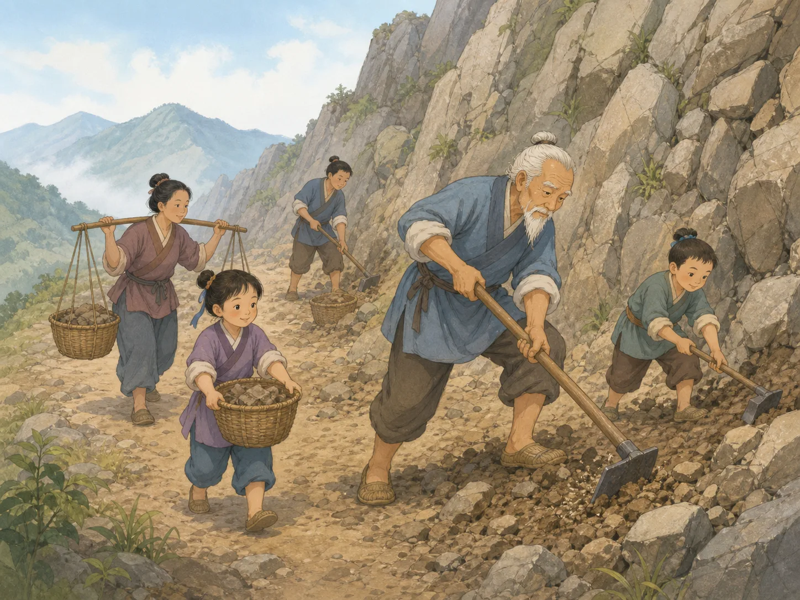
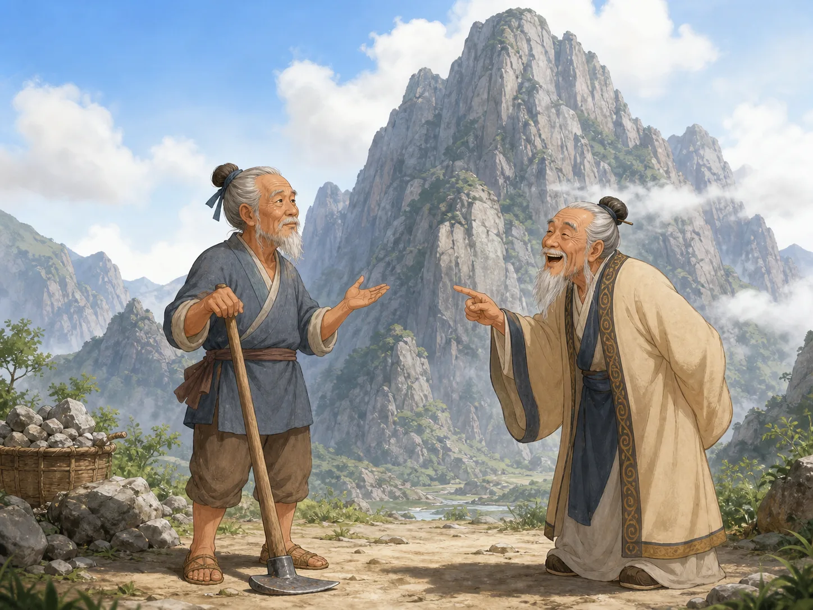
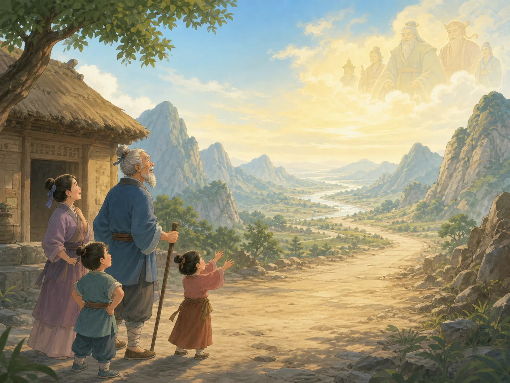

愚公移山
Yu Gong Moves the Mountains
Page 1
每次出门，都要绕过两座山
Every Trip Began with Two Mountains

Two mountains block the way from Yu Gong's home. To reach the other side, his family must take a long, difficult path.
很久以前，一位快九十岁的老人住在两座大山脚下。他叫愚公，这个名字差不多就是“看起来有点傻的老人”。
愚公的家正对着太行山和王屋山。家里人每次出门，都得沿着山脚绕很远。去看一个朋友，要绕山；去买一点东西，也要绕山。走到家时，篮子轻了，腿却重得快抬不起来了。
一天，愚公站在门口看了很久，忽然转过身说：“不绕了。我们把山挖开，修一条直路吧！”全家先是安静了一下。他的妻子问：“挖出来的石头和土放在哪里？”大家想了一会儿，最后决定把土和石头放到一个很远的地方。
Long ago, an old man of almost ninety lived at the foot of two enormous mountains. His name was Yu Gong, which means something like “the Foolish Old Man.”
Mount Taihang and Mount Wangwu stood directly in front of his home. Every trip began with a long walk around them. Visit a friend? Walk around the mountains. Bring something home? Walk around them again. By the time the family returned, their baskets felt light and their legs felt as heavy as rocks.
One day, Yu Gong stared at the mountains and said, “No more walking around. Let us dig a road straight through!” The family went quiet. His wife asked one very good question: “Where will we put all the dirt and stones?” The family thought for a moment. Then they chose a place far from home where they could leave it all.
Page 2
咚！嚓！第一筐石头装满了
Thud! Scrape! The First Basket Is Full.

One hoe cannot move a mountain, but the whole family keeps digging until the first basket is full.
第二天一早，愚公带着儿子、Sūnzǐ · 传统上被认为与《孙子兵法》有关的古代军事思想家。来到山脚。咚！锄头敲在石头上。嚓！铲子挖进泥土里。一个邻居家的小男孩看见了，也跳着跑来帮忙。
一锄头挖不了多少，一只篮子也装不了多少。可篮子装满一筐，他们就运走一筐；山壁挖下一小块，他们就在原来的地方接着挖。
夏天，汗水从他们的鼻尖往下滴。冬天，手指冻得发红。他们累了就坐下来喝水，喝完又站起来。山还是高得看不到顶，可山脚下已经出现了一块从前没有的小缺口。
Early the next morning, Yu Gong came to the mountain with his sons and grandchildren. Thud! His hoe hit a rock. Scrape! A shovel dug into the dirt. A young boy from the next house saw them and came running to help.
One swing moved only a little dirt. One basket held only a few stones. But whenever a basket was full, they carried it away. Whenever a small piece came loose, they started on the piece behind it.
In summer, sweat dripped from their noses. In winter, their fingers turned red with cold. When they were tired, they sat down for water. Then they stood up and began again. The mountain still reached into the clouds, but a small notch had appeared at its foot.
Page 3
“这么大的山，你怎么挖得完？”
“How Could You Ever Finish?”

The Wise Old Man points at the mountain and laughs. Yu Gong waits quietly beside his hoe before answering.
有一位老人看见他们挖山，笑得胡子都抖了起来。大家叫他智叟，意思是“聪明的老人”。故事故意把“聪明人”和“傻老人”放在了一起。
智叟指着愚公说：“你已经这么老了，连山脚的一小块石头都挖不完，怎么可能搬走两座山？”
愚公扶着锄头，等他笑完才说：“我做不完，还有我的孩子。孩子做不完，还有他们的孩子。我们家会一代一代多下去，可山不会一代一代长高。只要不停，为什么挖不完呢？”这一次，智叟张了张嘴，却没有话可以回答。
Another old man saw them digging and laughed until his beard shook. People called him Zhi Sou, which means “the Wise Old Man.” The story puts the “wise” man and the “foolish” man face to face on purpose.
Zhi Sou pointed at Yu Gong. “You are already so old! You cannot even remove one small corner of this mountain. How could you possibly move two?”
Yu Gong rested his hands on his hoe and waited until the laughter stopped. “If I cannot finish, my children will continue. Then their children will continue. My family will keep growing, but the mountains will not. If we never stop, why should the road stay closed forever?” This time, Zhi Sou opened his mouth but had nothing to say.
Page 4
早晨的阳光照到了家门口
Morning Sunlight Reaches the Door

After heavenly spirits carry the mountains away, sunlight fills the valley and a straight road opens before Yu Gong's home.
这个古老的寓言里，还有神仙住在天上。一位山神一天又一天看着愚公一家挖山，发现他们真的没有停手的打算。他赶紧飞到天上，把这件事告诉了天帝。天帝看到愚公一家的决心，便派来两位天神。每一位都强壮得能背起一座大山。
一天夜里，两位天神弯下腰，一人背起一座山，把它们搬到了很远的地方。第二天早上，愚公推开门，愣住了。没有黑沉沉的山壁，也没有绕来绕去的小路。金色的阳光一直照到家门口，前面是一条又宽又直的路。
愚公从没以为自己一个人就能挖完两座山。他相信儿孙们会一代接一代继续下去。正是这种明知很难也不肯放弃的决心，感动了故事里的天帝。
In this old fable, gods and spirits lived in the sky. Day after day, a mountain spirit watched Yu Gong's family dig. They really were not going to stop. He flew to the Lord of Heaven and told him what was happening. Impressed by the family's determination, the Lord sent two mighty spirits. Each one was strong enough to carry a mountain.
That night, each spirit bent down, lifted one mountain onto his back, and carried it far away. The next morning, Yu Gong opened his door and froze. No dark wall of rock. No twisting path. Golden sunlight reached all the way to his home, and a wide, straight road stretched ahead.
Yu Gong never thought he could move both mountains by himself. He believed his children and grandchildren would keep going, one generation after another. That determination moved the Lord of Heaven to help.
山很大，他没有停下
The Mountains Were Huge. He Kept Going.
愚公知道，自己也许看不到道路修成的那一天。可是他还是继续挖，家人也陪着他一起挖。人们记住这个故事，不是因为两座山很容易搬走，而是因为山再大，愚公也不肯放弃。
Yu Gong knew he might never see the road finished. Still, he kept digging, and his family kept digging beside him. That is why people remember this story: the mountains were enormous, but Yu Gong refused to give up.